Explore Santander
A Brief History
Santander developed as a Cantabrian port serving Castilian trade and later as a fashionable seaside resort patronised by Spanish royalty in the late nineteenth century. The Magdalena Peninsula palace and El Sardinero quarter reflect that bourgeois expansion along the bay. A devastating fire in 1941 destroyed much of the medieval centre, after which planners rebuilt civic and banking districts that still frame a harbour linked to Asturian coal exports and modern ferry traffic to Britain.
Attractions Map
Top Sights & Activities
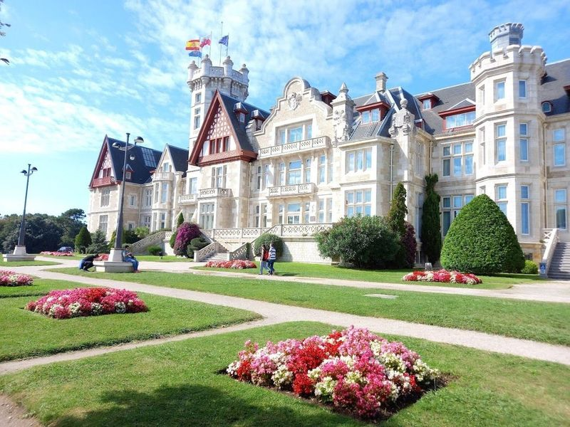
Palacio de la Magdalena
Palacio de la Magdalena is a historic royal summer residence built in the early 20th century on the Peninsula of La Magdalena, Santander. It was constructed to serve as the official summer residence for the Spanish Royal Family and was designed by architects Javier Gonzalez de Riancho and Gonzalo Bringas. The palace, which cost 700,000 pesetas of 1912, now houses Menendez Pelayo International University and serves as a meeting and conference center.
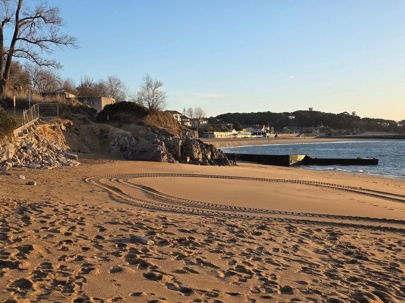
Playa Los Peligros
Playa Los Peligros is a 200-meter sandy beach with calm waters, making it used for swimming and water sports. It features public showers for convenience. The beach can be easily accessed from the Palacio de Festivales building in Puerto Chico harbor or by taking a relaxing coastal walk from the city center. Despite its name, which means 'danger' in Spanish, Playa Los Peligros is family-friendly and suitable for everyone to enjoy together.
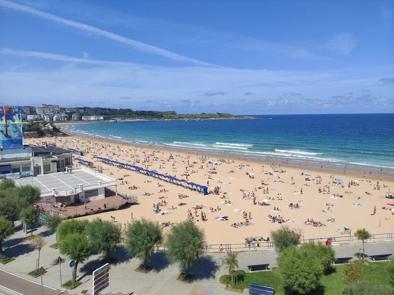
Primera Playa del Sardinero
Primera Playa del Sardinero is a well-developed beach in Santander, Cantabria, Spain. It offers snack bars and loungers for rent, and its strong breezes create surf breaks. The area is known for its coastline and pristine beaches like Playa de la Magdalena. travellers can soak up the sun or indulge in water sports at this tourist destination.
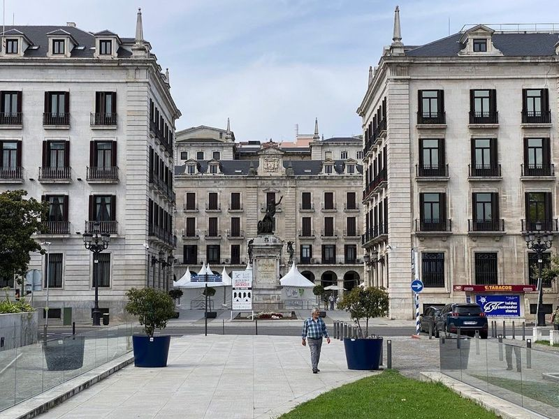
Plaza Porticada o de Velarde
Plaza Porticada, also known as Plaza Velarde, is a lively neoclassical square In Santander. It offers views of the portico-lined plaza and the city's expansive bay. Many major attractions such as the Gothic cathedral, Museum of Prehistory and Archaeology, Centro Botin, Paseo de Pereda promenade, and Banco Santander building are just a few minutes' walk away.
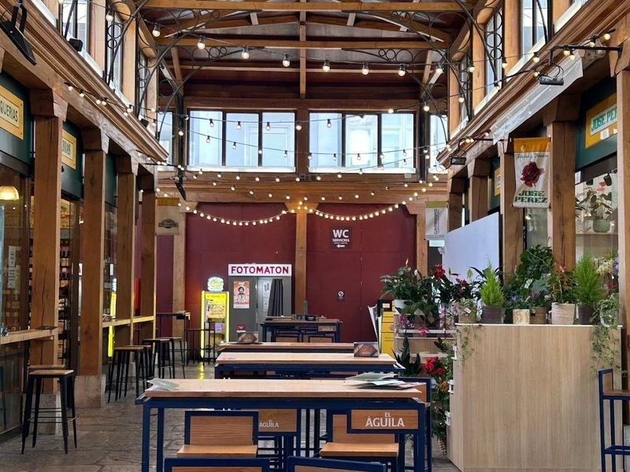
Mercado del Este
Mercado del Este, also known as Eastern Market or Plaza del Este, is a historic and culturally significant destination in Santander. The market hosts a variety of shops and bars, offering travellers the chance to sample local pintxos and cheeses. Additionally, the ground floor is home to the Museum of Prehistory and Archaeology of Cantabria (MUPAC), which showcases archaeological finds from renowned sites like La Garma and Altamira.
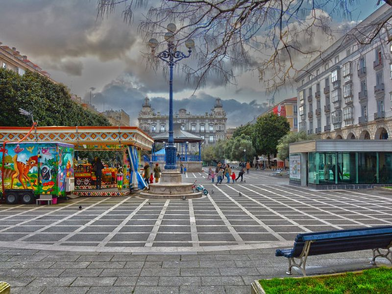
Plaza de Pombo
A lively square in the heart of Santander, surrounded by cafes and shops, used for people-watching and enjoying local life. The site is catalogued as a square. The site is catalogued as a square. The site is catalogued as a square. Plaza de Pombo is listed among principal sites for Santander within Spain.
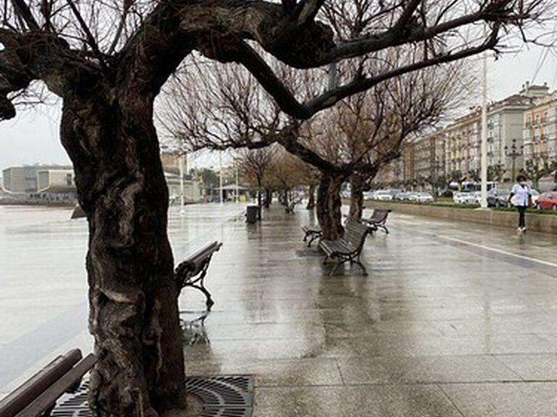
Paseo Marítimo de Santander
A scenic promenade along the waterfront, ideal for a leisurely stroll with views of the bay and the city skyline. The site is catalogued as a tourist attraction at P.o de Pereda, 27, 39004 Santander, Cantabria, Spain. The site is catalogued as a tourist attraction at P.o de Pereda, 27, 39004 Santander, Cantabria, Spain.
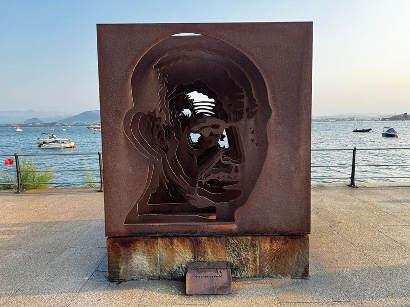
Los Raqueros
Los Raqueros is a popular attraction in Santander, featuring bronze statues of four orphaned children known as "raqueros." These life-size sculptures depict the boys seated, standing, and diving for coins along the Paseo de Pereda. The raqueros were marginalized children who survived by collecting coins thrown into the sea by passengers and crew members at the docks of Santander's bay.
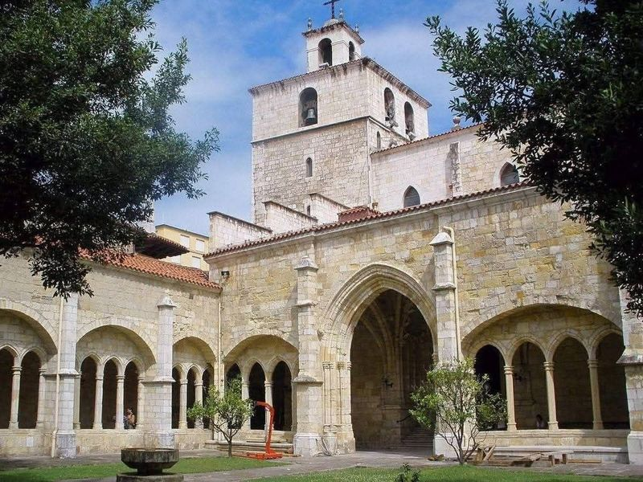
Catedral de Santander
The Catedral de Santander is a Gothic cathedral In Santander, Spain. It consists of two churches with ancient statuary and Gothic design elements. The city's historic quarter also offers churches and plazas, while nature lovers can explore the landscapes of Cantabria and the nearby Picos de Europa National Park for outdoor activities.
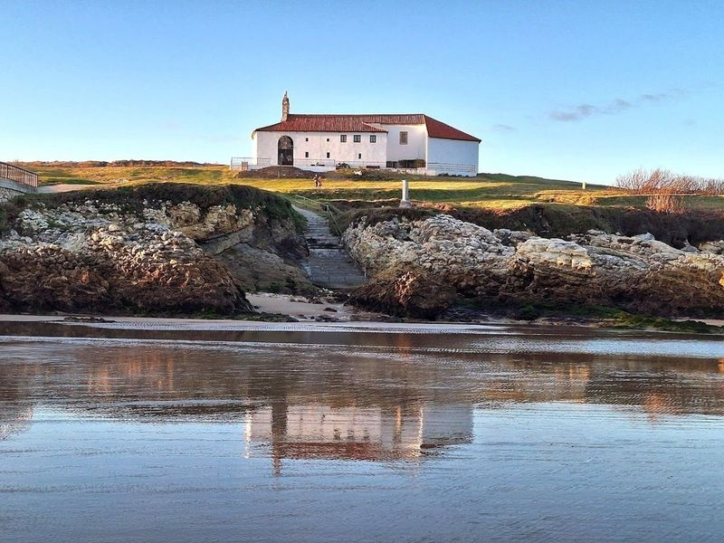
Ermita de la Virgen del Mar
Ermita de la Virgen del Mar is a hermitage that honors the patron saint of Santander, la Virgen del Mar. While its origins date back to 1400, it has undergone multiple renovations due to exposure to the elements. Legend has it that the hermitage's location was mysteriously changed overnight during its construction. Situated on an islet in San Roman, this sanctuary can be reached via a bridge and offers a viewpoint of the sea.
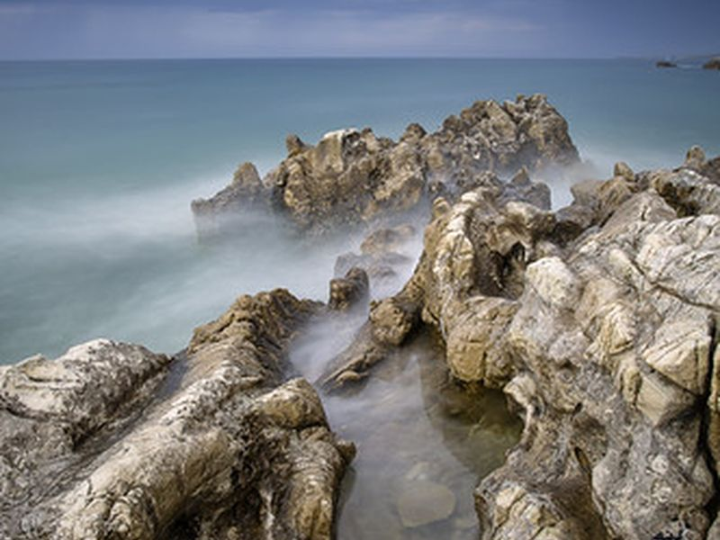
Playa Virgen del Mar
A serene beach located near the Hermitage of the Virgen del Mar, ideal for a peaceful day by the sea. The site is catalogued as a tourist attraction at C. Virgen del Mar, 160, 39012 Santander, Cantabria, Spain. The site is catalogued as a tourist attraction at C. Virgen del Mar, 160, 39012 Santander, Cantabria, Spain.
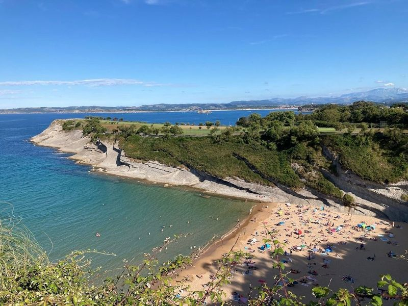
Playa de Mataleñas
Playa de Mataleñas is a cove beach with fine sand and turquoise waters, nestled between cliffs near Santander. Accessible via steep stairs, it offers a peaceful haven away from the bustling Playa Sardinero. The area also features attractions like the Ethnography Museum and gardens around Centro Botin. Additionally, the Sercotel Palacio del Mar Hotel offers event spaces including the spacious Matalenas room equipped with modern amenities for meetings or weddings.